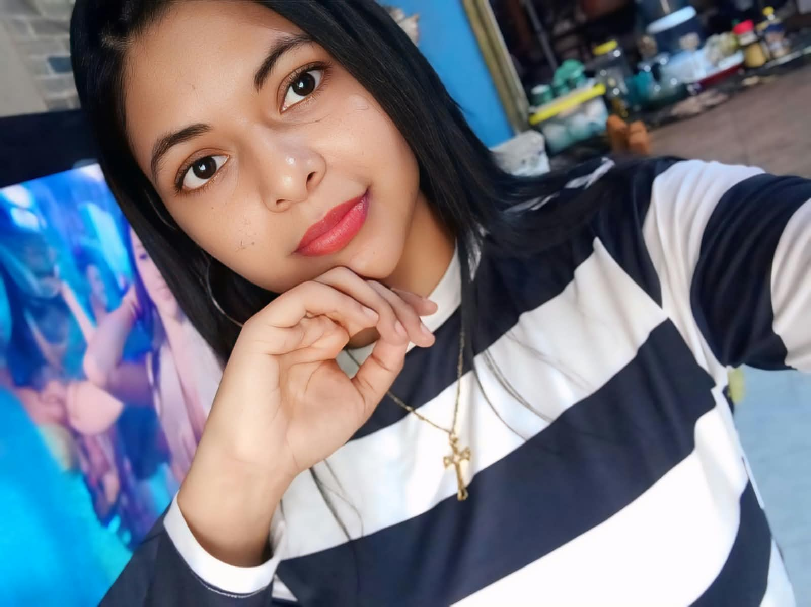

Mi página personal
Hola, Mi nombre es Karla y soy de Babahoyo. Me considero una persona que disfruta de las cosas simples de la vida: me encantan los días fríos, los animales y mi color favorito es el azul. Actualmente me encuentro estudiando la carrera de Sistemas de Información. Estoy cruzando un reto muy interesante en mi universidad, ya que me encuentro cursando materias de 3.er y 5.º semestre al mismo tiempo. Me apasiona mucho mi área y tengo muchas ganas de seguir aprendiendo, mejorando mis habilidades y organizándome mejor para aprovechar al máximo esta etapa.

Mis recuerdos y momentos especiales.
Escucha mi canción favorita:
Observa mi video favorito: